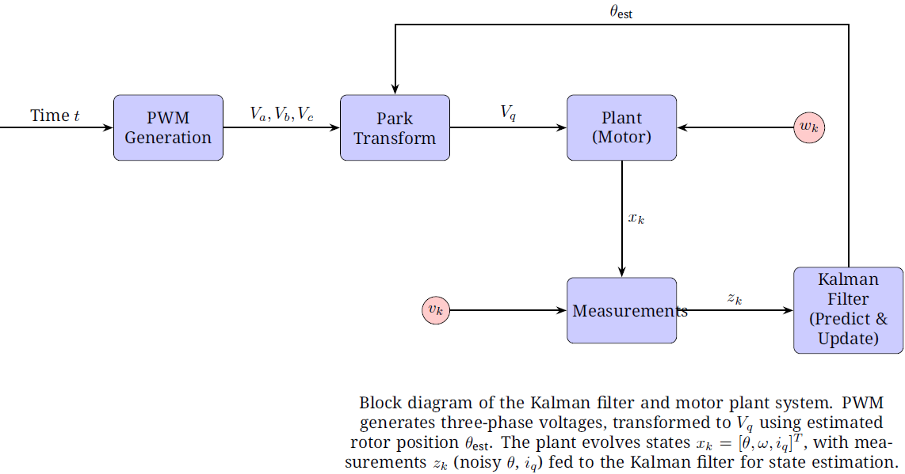

MotorDrive Insights
New: Mastering Kalman Filters for Maxon EC 8 mm BLDC Motors
Hey Engineers!
Reach into the secp\ond edition of MotorDrive Insights! This issue verifies a Kalman filter design for precise state estimation in the compact Maxon EC 8 mm BLDC motor with Hall sensors through mathematical modeling in both Python and Matlab .m scripting. Perfect for robotics, drones, or IoT projects, this guide helps you tackle noise and boost control all without energizing a circuit.

Read the full guide, download the PDF, and join the conversation on GitHub!
| Read Now |